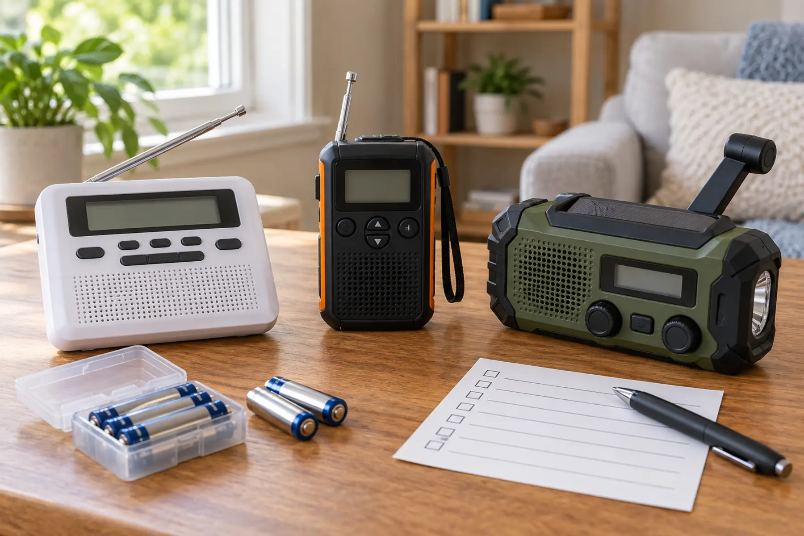

Desktop SAME alert radio
Best for a fixed bedroom or main-floor alert job. County filtering can reduce alarms from distant areas.
Tradeoff: programming and reception must be proven.
EMERGENCY GEAR · ALERT-FIRST BUYING GUIDE · NO BRAND RANKING
A radio that lives in a drawer is clutter. Choose the alert job first, prove reception where it will live, then make the power and test routine boring enough to repeat.

NOAA Weather Radio All Hazards broadcasts official National Weather Service warnings, watches, forecasts and other hazard information around the clock. It uses seven VHF frequencies from 162.400 to 162.550 MHz and requires a compatible receiver; an ordinary AM/FM radio is not enough. The question is not “Which radio has the most gadgets?” It is “Must this unit wake the household for local warnings, travel with the family, or cover a power outage after another alert path fails?”
Specific Area Message Encoding lets a compatible receiver respond to alerts for selected counties or independent cities. It can reduce alarms for places outside the family’s area, but it does not improve a weak signal, replace programming, or guarantee that every hazard is county-wide. Use NOAA’s county listing for current codes and the receiver manual for exact steps.
Decide whether to program home only, home plus a nearby county, or a travel location. Too broad creates unnecessary alarms; too narrow can omit a place where a parent works or a child attends school. Write the chosen areas beside the radio. Do not let the child silently change event blocking or county settings.
For a fixed alert receiver, NOAA recommends AC power with battery backup to preserve battery life. For a portable unit, common replaceable cells may be easier to manage than a sealed rechargeable pack—but only if the family stores fresh matching cells and checks for leakage. A hand crank produces limited energy and can be tiring. A small solar panel depends on light, orientation and time. Treat both as supplements, not promises.
Do not charge, open, modify or substitute batteries outside the exact manual. Keep button cells and loose batteries away from children. Check the family backup-power guide for a separate phone plan and the charging-station guide for listed power hardware.
Reception is local and building-specific. Basement placement, metal construction, terrain and distance from a transmitter can matter. Extend or orient the antenna only as the manual directs. If reception is poor, use NOAA’s reception guidance and the manufacturer’s support; do not improvise an outdoor antenna without appropriate electrical and lightning-safety expertise.
Make a monthly test card: date, station, county, AC status, backup battery, audible alarm and household response. Add a check after moving the radio, changing internet service, renovating, or changing counties. Pair the radio with Wireless Emergency Alerts and local emergency information; use the home escape drill to keep devices connected to action.
Use the comparison links to inspect categories, not accept a winner. Search results and prices change. Confirm the exact receiver on NOAA’s current information pages, the manufacturer manual and CPSC recall database before buying.
Skip desktop-only gear if the sole need is travel. Skip a basic portable when overnight automatic alerting is the job. Skip a hand-crank unit if hand strength, dexterity, hearing or control complexity makes it unrealistic. Families with hearing, vision or mobility needs should evaluate compatible external notification and placement with the user—not assume a louder speaker solves access.
MAKE THE DAY COUNT
Build the plan your family can finish well, then leave enough energy for the next part of the day.
More family plansTHE USEFUL STUFF
These are practical categories to compare—not a reason to overpack. Check fit, specifications and current reviews before buying.
Paid links: As an Amazon Associate I earn from qualifying purchases. You pay no additional cost.
Compare county programming, alert controls, display, battery backup, external-device support and the exact manufacturer manual.
See current options → COMPARE ON AMAZONVerify automatic alert behavior, common-cell power, antenna, control lock, reception guidance and storage instructions.
See current options → COMPARE ON AMAZONTreat crank and solar as backup features; compare the real battery system, alert behavior, charge instructions and current recall status.
See current options →